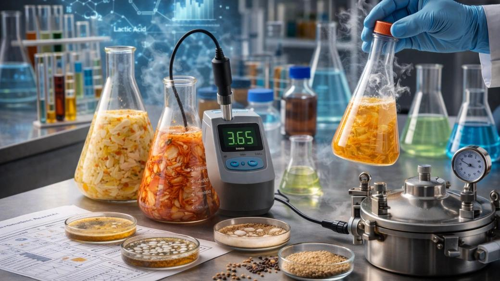
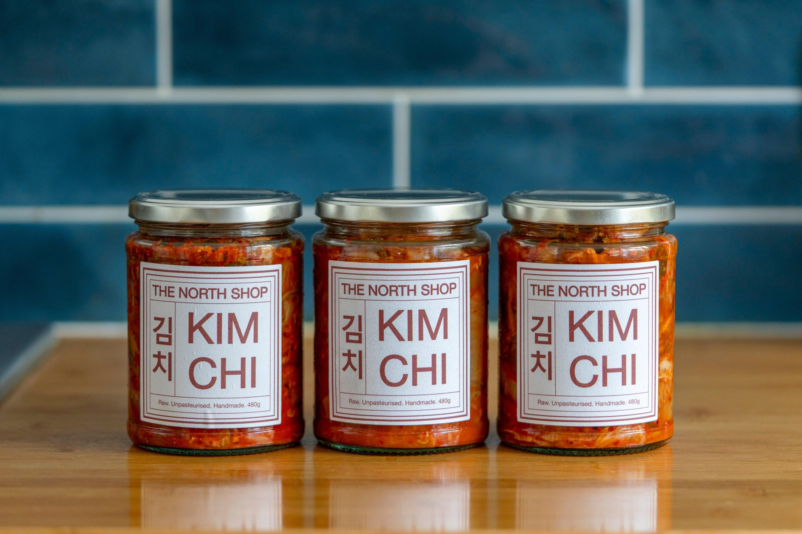
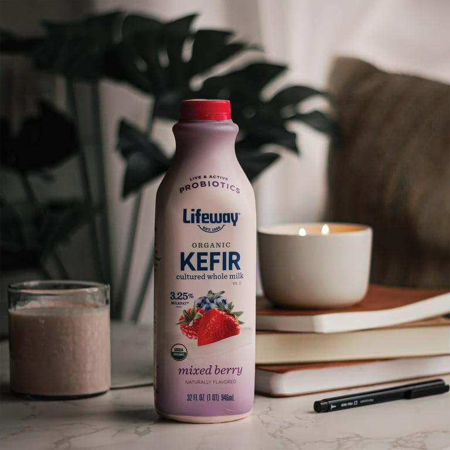
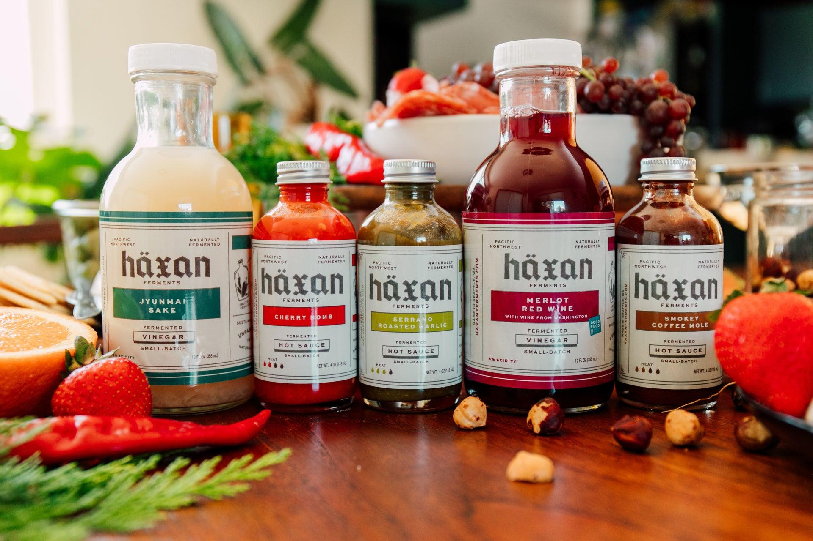

We bridge traditional wild fermentation protocols with laboratory strain testing to deliver active food matrices designed for the modern human microbiome.

Understanding the biotics pathway to total digestive health.
Non-digestible plant fibers that act as food for the beneficial bacteria in your gut. They ensure colonies stay active and grow robustly.
Live microscopic organisms (such as Lactobacillus) introduced through our raw ferments to build a diverse digestive ecosystem.
Beneficial byproduct metabolites (short-chain fatty acids like butyrate) generated by probiotics that heal the intestinal barrier.
100% pesticide-free vegetables and raw seeds are prepped and washed with purified spring water to preserve local wild strains of lactic acid microflora.
Submersed in active brine solutions, wild strains start feeding on natural simple sugars. No laboratory starter strains are added, promoting structural diversity.
Monitored in clean, ambient temperatures, the ferment achieves peak enzyme accumulation, and bacteria count increases to over 10 billion CFU per serving.
The fermentation is halted at peak acidity via cold storage, keeping cells alive. Jars are sealed and shipped in cooled boxes to ensure raw freshness.
Peer-reviewed clinical studies demonstrate that consuming daily traditional raw fermented foods increases microbiota diversity and decreases inflammatory markers across 17 distinct biological pathways.
By feeding the body active probiotics rather than synthesized supplement powders, you allow the digestive tract to extract nutrients naturally while bolstering mucosal immune barriers.
Read Clinical Literature
Spicy, raw, crunch-filled probiotic cabbages, daikon radishes, and root variations.

Active dairy-based and seasonal plant-based probiotic drinkable milks.

Oak aged, cold pressed enzymatically active hot sauces, pestos, and pastes.
Up to 90% of our body's serotonin is produced in the gut. Supporting your flora stabilizes mental clarity, sleep cycles, and daily emotional states.
Active enzymes ease food breakdown processes, allowing cells to convert macronutrients into pure ATP energy faster without insulin spikes.
Systemic inflammation is directly tied to digestive toxicity. Clear, glowing skin originates from clean blood flow generated by a balanced colon.
Every jar we ship undergoes independent laboratory testing to verify cell count vitality. We ensure a minimum of 10 Billion CFUs of native Lactobacillus species remain active through the expiration date.
Explore Subscription Tiers